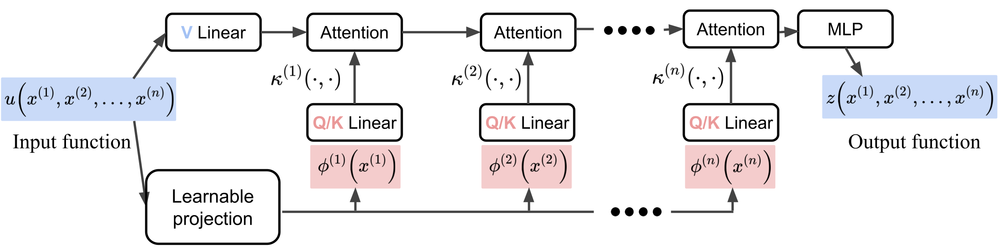
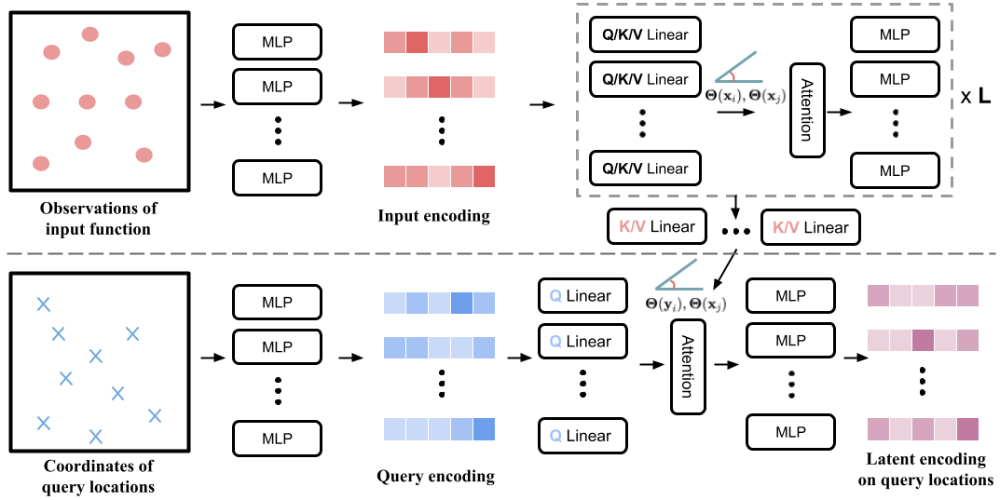
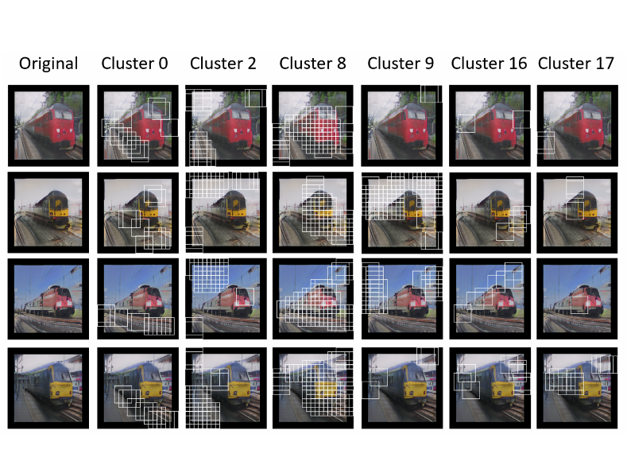
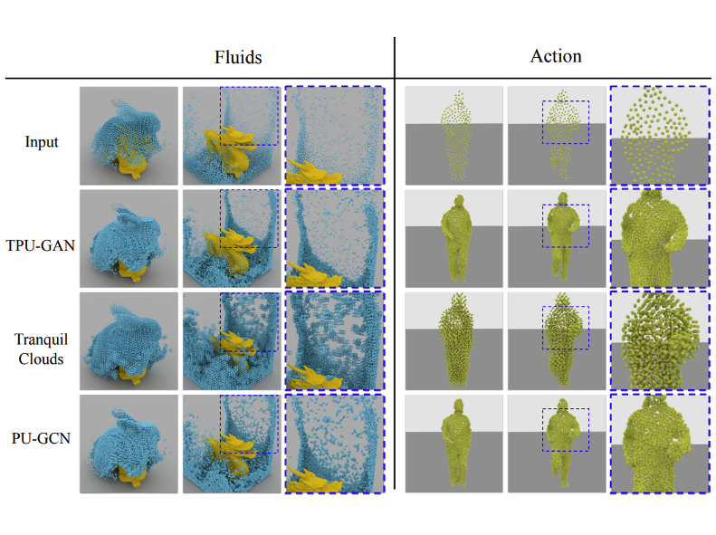
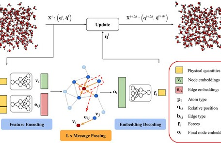
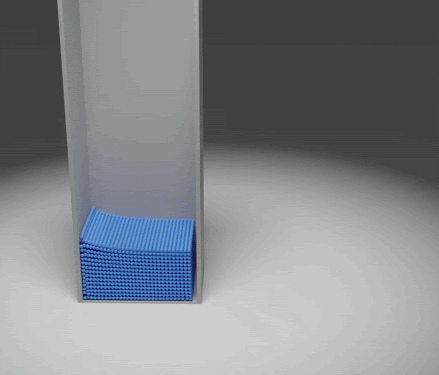

|
Zijie Li Welcome! I'm a PhD candiate at Mechanical and AI lab in Mechanical Engineering department at CMU, where I works at the intersection of numerical phyiscs simulation and deep learning. I also spent a summer in Tiktok Seed-Image-Generation department, doing research on text/image generation with diffusion model. (I will be graduating around 2025 March. If you think I am a good fit for your position, please feel free to reach out) Email / CV (last update Nov 2024) / Scholar / Github / Linkedin |

|
ResearchI'm interested in deep learning for physics simulation spans from particle-based dynamics to Eulerian fluid simulation. In particular, how can we tweak popular popular neural network architecture such as graph neural network and Transformer using the insights and lessons from numerical solvers to make them better suited for specific simulation tasks. Recently I've been working on diffusion models for both physics prediction and its applications to different modalities (e.g. text). |
Selected Publications(* denotes equal contribution) |
Preprint |
 |
CaFA: Global Weather Forecasting with Factorized Attention on Sphere
Zijie Li, Anthony Zhou, Saurabh Patil, Amir Barati Farimani, In submission, 2024 code A lightweight Transformer with axial factorized attention designed for sphere. The model achieves comparable medium-range forecast accuracy compared to several other state-of-the-art Transformer model with greatly reduced compute. |
Peer-reviewed |
|  |
Scalable Transformer for PDE Surrogate Modeling
Zijie Li, Dule Shu, Amir Barati Farimani, NeurIPS poster, 2023 code In this paper we propose a axial factorized attention scheme to improve the scalability of Transformer on multi-dimensional PDE problems. |
|  |
Transformer for Partial Differential Equations’ Operator Learning
Zijie Li, Kazem Meidani, Amir Barati Farimani, Transaction on Machine Learning Research code In this paper we propose and study a Transformer encoder-decoder structure that is capable of adapting to different types of discretization. |
 |
A physics-informed diffusion model for high-fidelity flow field reconstruction
Dule Shu*, Zijie Li*, Amir Barati Farimani, Journal of Computational Physics code We investigate the use of diffusion model for high-fidelity flow field reconstruction. We also propose to incoorprate residual information into the backward diffusion process. |
|  |
Prototype memory and attention mechanism for few-shot image generation
Tianqin Li*, Zijie Li*, Andrew Luo, Harold Rockwell, Amir Barati Farimani, Tai Sing Lee. ICLR poster, 2022 code We propose an memory mechanism to augment the few-shot image generation task, where internal feature maps inside the Generator are modulated by attending with feature vectors stored in the memory bank. |
|  |
TPU-GAN: Learning temporal coherence from dynamic point cloud sequences
Zijie Li, Tianqin Li, Amir Barati Farimani. ICLR poster, 2022 code We propose a point cloud GAN architecture to learn the temporal coherence from dynamic point cloud sequences, which is capable of generating coherent point cloud motion. |
|  |
Graph neural networks accelerated molecular dynamics
Zijie Li, Kazem Meidani, Prakarsh Yadav, Amir Barati Farimani. Journal of Chemical Physics, 2022 code In this paper we study using graph neural network to directly model the atomic forces in molecular dynamics simulation. |
|  |
Graph neural network-accelerated Lagrangian fluid simulation
Zijie Li, Amir Barati Farimani. Computers & Graphics, 2022 code In this paper we study using graph neural network to surrogate different components in a typical Lagrangian fluid simulation - advection and pressure projection. |
ServiceJournal reviewerNature Machine Intelligence, IEEE Transactions on Neural Networks and Learning Systems, Transactions on Machine Learning Research Conference reviewerNeurIPS, ICLR |
|
Feel free to steal this website's source code. Do not scrape the HTML from this page itself, as it includes analytics tags that you do not want on your own website — use the github code instead. Also, consider using Leonid Keselman's Jekyll fork of this page. |